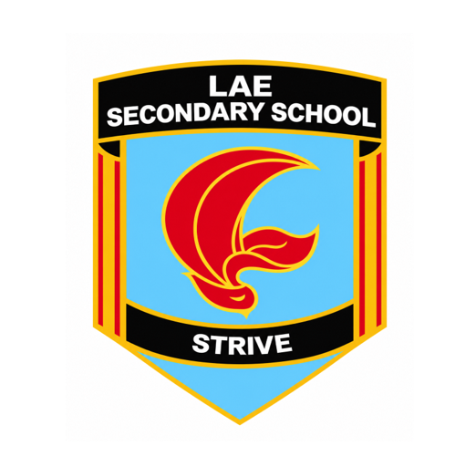

Engineering in practice
Robotics introduces students to how mechanical structures, motors, control systems and programmed instructions work together to complete a task.

Discover Lae Secondary School’s robotics journey—from students assembling their first competition robots to representing Papua New Guinea on the international stage. Explore the laboratory, learning opportunities, competition history and the people helping young innovators build confidence through science and technology.
A school robotics initiative documented by public reporting and FIRST Global team profiles.
Practical STEM learning, creative thinking and international participation.
Lae Secondary School in Morobe Province has participated in the FIRST Global robotics challenge since 2018, giving students opportunities to explore engineering, teamwork and technology while representing Papua New Guinea. The school’s robotics laboratory, officially opened in July 2025, is an important milestone in supporting the program.
Robotics introduces students to how mechanical structures, motors, control systems and programmed instructions work together to complete a task.
Building and testing a robot encourages students to experiment, identify faults, refine designs and learn from trial and error.
FIRST Global gives student teams a setting to meet peers from other countries, exchange ideas and collaborate through a shared engineering challenge.
Why robotics matters to secondary education.
Connect science and mathematics to practical design, testing, measurement and technology.
Give students experience with robot assembly, modification, programming concepts and technical troubleshooting.
Help students share responsibilities, communicate clearly and coordinate their work toward a common goal.
Support curiosity, creativity and the willingness to explore solutions beyond routine classroom exercises.
Expose learners to engineering, computer science, electronics, automation and related tertiary pathways.
Provide a platform for students to showcase their work, learn from international teams and share their experience at home.
These objectives describe the educational value and intended direction of robotics learning; they should not be read as a published formal school policy unless the school confirms them.
A dedicated space to support student innovation.
Lae Secondary School officially opened a new robotics laboratory on 11 July 2025. The National Department of Education Secretary, Dr Uke Kombra, officiated at the opening. NBC PNG and The National reported that the facility cost nearly K1 million when transportation, storage and construction costs were included.
The building had been intended for a science laboratory; the materials were put to use supporting robotics and STEM learning at the school.
Reporting on the opening noted that the robotics club had not previously had a steady location for its projects. A dedicated laboratory can provide a more consistent environment for assembling, testing, storing and improving equipment.
Potential facility needs include robotics kits, computers, safe tool storage, reliable power, internet access and supervised work areas. Current equipment inventories have not been independently confirmed in the public sources reviewed.
Core areas students can explore through robotics projects.
Robot frames, wheels, gears, linkages, grippers, structural stability and movement.
Instructions, sequencing, control logic, debugging and using code to direct robot actions.
Motors, power systems, circuits, sensor inputs and the relationship between hardware and control.
Measuring performance, identifying failure points, changing a design and testing again.
Planning tasks, allocating roles, communicating clearly and coordinating actions with teammates.
Responsible equipment use, orderly workspaces, risk awareness and following teacher instructions.
These are typical learning areas in robotics education. Public sources confirm student robot assembly and modifications, but do not provide a full official Lae Secondary School robotics syllabus.
The people behind the school’s robotics journey.
Teams have included Grade 11 students, with science-stream students reported among those selected for international events. Public coverage has described students learning through assembling robot kits, testing modifications, working together and presenting Papua New Guinea internationally.
The 2018 team included Stephanie Wakma and Emerald Pipingan, accompanied by teacher Martha Aaron. In 2025, The National reported that four students represented the school: Jastina Grochau, Delewai Pakop, Bonaventure Boaging and Carol Bopi.
School principal Christopher Raymond has publicly supported the initiative and welcomed the laboratory investment. Reporting on the 2025 competition identified teachers Martha Aaron and Trevor Elia as accompanying the students. Earlier competition coverage also documents the involvement of teachers and school leadership in preparing and supporting teams.
Staff roles and current team membership should be confirmed by the school before this page is used as a current staff directory.
Lae Secondary School’s documented participation in FIRST Global.
Lae Secondary School first participated in the international robotics challenge. Public reporting described students assembling a robot kit, learning through trial and error, making modifications and adapting a claw mechanism for competition tasks.
The school returned to the international challenge in 2019, continuing its involvement in student robotics and STEM learning.
News coverage reports that the school did not participate in the 2020 and 2021 events during the COVID-19 period.
Lae Secondary returned to the competition. Reporting described five Grade 11 science students, including four girls and one boy, preparing with a robotics kit before travelling.
The team finished 43rd among 191 participating countries and territories, according to news reporting. EMTV reported that Papua New Guinea ranked among the leading Pacific island participants.
43rd of 191 · Reported resultTeam Papua New Guinea’s official FIRST Global profile identified Lae Secondary School students and teacher mentors representing the country. The challenge theme was “Feeding the Future,” focused on food-related global challenges.
The school again represented Papua New Guinea. The challenge theme was “Eco Equilibrium,” focused on environmental issues. Post-event reporting said the school team placed 90th out of 181 participating countries; four students were named in the report, accompanied by teachers Martha Aaron and Trevor Elia.
90th of 181 · Reported resultRead The National’s 2025 report ↗ · Official FIRST Global team profile ↗
An international platform for student robotics and STEM collaboration.
FIRST Global is an international robotics challenge that brings teams of young people together around a game or challenge theme. Teams design, assemble, program and operate robots to complete defined tasks. Teamwork and collaboration across national teams are central features of the event.
In 2025, the Papua New Guinea team profile described the “Eco Equilibrium” theme as a call to address environmental issues and sustainable solutions.
Participation can expose students to practical engineering, structured problem-solving, teamwork across cultures and the experience of presenting their country on an international stage. In 2025, a teacher quoted by The National also highlighted the value of confidence, knowledge and experience that students can share with peers after returning home.
Competition formats and rules change by year; consult FIRST Global’s official resources for current details.
Key public milestones in the school’s robotics story.
The team placed 43rd among 191 participating countries and territories at the Singapore event, according to The National’s coverage.
The opening of the school’s robotics laboratory was reported as an investment of nearly K1 million including transport, storage and construction costs.
The team competed in a challenge themed around environmental issues, linking robotics with questions of sustainability and the environment.
From assembly to testing and improvement.
Public reporting from the school’s early competition experience describes students assembling a supplied robot kit and following the instructions to understand how the parts fit together.
Students have reported taking a robot apart, making adjustments and improving features such as the claw mechanism to suit competition tasks.
Trial and error helps learners observe how a design behaves, locate problems and refine their approach. Future school project showcases could document the challenge, design process, testing and results.
How practical robotics can support future learning.
Students investigate a task, compare possible approaches and evaluate why a robot does or does not work as expected.
Preparing for a competition and sharing experiences can help students explain technical ideas, work with others and build confidence.
Robotics can help students explore future study in engineering, computer science, electrical and communications engineering, mechatronics and related fields.
The school’s competition experience has been linked in media reporting to students’ exposure to engineering pathways and the opportunity to share knowledge with peers. Further claims about measured learning outcomes should be supported by school records, evaluations or student testimony.
Connecting student innovation with local and national priorities.
Potential student projects could explore simple sensing, irrigation monitoring, crop data collection or automated sorting as learning prototypes.
Environmental monitoring, waste sorting and biodiversity awareness are possible themes for school projects, particularly relevant to the 2025 “Eco Equilibrium” challenge.
Robotics education can introduce ideas used in manufacturing, logistics, inspection and automation, helping students understand modern industrial systems.
Examples that can help students connect robotics concepts to real-world needs.
| Application area | Example learning idea | Skills explored |
|---|---|---|
| Agriculture | Model a sensor-assisted watering system | Sensors, measurement, control logic |
| Environment | Build a prototype to sort sample waste items | Mechanical design, classification, testing |
| Manufacturing | Simulate a conveyor and pick-and-place task | Automation, grippers, sequencing |
| Disaster awareness | Model a remote vehicle for inspecting a safe mock environment | Remote control, design constraints, safety |
| Community services | Design a prototype that moves or delivers lightweight objects | Planning, mobility, problem-solving |
These are suggested educational examples, not a list of current school projects.
Practical support can help more students participate.
News reporting has noted that robotics kits can be expensive. Kits, spare parts and maintenance supplies can affect students’ ability to practise consistently.
Ongoing teacher development, volunteer mentoring and structured project time can help students develop skills between competitions.
A teacher quoted by The National called for a national robotics competition so more schools could participate and prepare for international events.
Other possible priorities include computer access, connectivity, safe storage, travel funding and a sustainable equipment replacement plan. The school should confirm its current needs before any formal fundraising appeal is published.
Ways organisations and community members may be able to contribute.
Robotics kits, motors, sensors, computers, tools and spare parts, subject to the school’s technical requirements.
Technical demonstrations, supervised workshops, career talks and support from engineers, programmers and university students.
Potential support for registration, travel, accommodation, preparation and other approved participation costs.
Organisations interested in supporting robotics should contact the school administration to confirm current priorities, approval processes, donation requirements and appropriate contact channels.
A proposed framework for further development, subject to school approval.
This roadmap is a proposal for discussion. It is not an approved school development plan unless formally adopted by the school.
A visual record of learning, preparation and achievement.
Show the learning environment, equipment and supervised practical work.
Use captions to explain the task, process and what students learned.
Organise photographs by year and link them to the relevant competition reports.
Personal experiences can show the impact of robotics more clearly than statistics alone.
A 2018 report quoted student Stephanie Wakma describing how students assembled a mini-robot, took it apart, tested it and modified the claw mechanism. Her account illustrates the hands-on nature of the learning process.
In 2025, teacher Martha Aaron told The National that the competition could boost students’ confidence and knowledge and give them experience to share with peers. New testimonials should be collected with consent and approved by the school.
Quick answers about the robotics page and program.
Public reporting identifies 2018 as the school’s first participation in the FIRST Global Challenge.
The new robotics laboratory was officially opened in July 2025, with Dr Uke Kombra, Secretary of the National Department of Education, officiating.
Media reports stated that the team placed 43rd among 191 participating countries and territories in Singapore.
The National reported that the team placed 90th out of 181 participating countries at the Panama City event.
Enquiries should be directed to the school administration. Participation arrangements, current team selection, donations and sponsorship opportunities must be confirmed by the school.
Public reports describe robotics classes and the club’s competition work, but the sources reviewed do not provide a complete official syllabus. Contact the school for current curriculum and participation details.
Help create more opportunities for students to explore technology.
Contact the school to ask about current robotics activities, eligibility, schedules and participation arrangements.
Engineers, programmers, researchers and university students may enquire about offering talks, demonstrations or approved mentoring.
Organisations can ask the school about its current needs, donation processes, sponsorship options and partnership approval requirements.
For current program details, official school guidance and partnership enquiries.
Location: Lae District, Morobe Province, Papua New Guinea
Postal address: PO Box 792, Lae 411
Administration: +675 7828 9085
Email: administration@laesecondary.edu.pg
General enquiries: info.reception@laesecondary.edu.pg
Public references used to prepare this page.
Editorial note: This page summarises publicly available reports and team profiles. Proposed learning ideas, development priorities and future plans are clearly framed as opportunities, not confirmed school commitments. School administration should review the content, current contact details and photo permissions before publication.
Lae Secondary School’s robotics journey demonstrates how practical learning and international collaboration can open new horizons for young Papua New Guineans. Contact the school for verified information about current activities, support needs and participation.